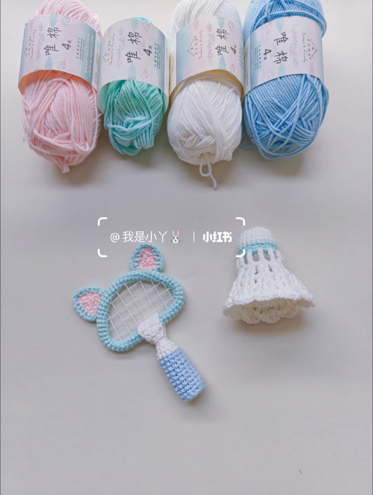

Vợt Tai Mèo và Quả Cầu Lông
Ký hiệu cơ bản
- X Mũi đơn
- V Mũi tăng (2 mũi X chung chân)
- A Mũi giảm (2 mũi X chụm đầu)
- CH Mũi bính (mũi móc xích)
- BLO Móc vào nửa cạnh trong
- F Mũi kép đơn
Phần 1: Quả Cầu Lông
Đế cầu (Màu tùy chọn)
- R1: Tạo vòng tròn ma thuật, móc 6X (6)
- R2: 6V (12)
- R3: (1X, 1V) lặp lại 6 lần (18)
- R4: (2X, 1V) lặp lại 6 lần (24)
- R5 - R7: Móc 24X không tăng giảm
- R8: Đổi sang màu len viền, móc 24X. Cắt len, chốt mũi.
Lông vũ (Màu trắng)
- Bước 1: Tạo phần chóp lông vũ bằng cách lặp lại 4 hàng từ R1 đến R4 giống hệt như phần đế cầu ở trên (Ra được 24 mũi).
- Bước 2 (R5): Đổi sang len màu trắng, móc toàn bộ vào cạnh trong của mũi (BLO). Móc theo sơ đồ họa tiết ren (chart hình).
- Bước 3: Móc tiếp các hàng họa tiết mạng nhện của lông vũ theo chart.
- Hoàn thiện: Sau khi móc xong và cắt len, lấy phần đế cầu và phần lông vũ khâu ráp lại với nhau. Có thể nhồi một chút bông vào giữa để đế cầu phồng đẹp.
Ghi chú họa tiết: Mũi kép đơn (F) ở giữa sơ đồ: Đâm kim nằm ngang xuyên qua chân mũi để móc một mũi kép đơn, thao tác tương tự như móc mũi kép đơn ngoặc trước (FPdc) để tạo đường gân nổi cho cánh lông vũ.
Phần 2: Vợt Cầu Lông Tai Mèo
Cán vợt & Khung vợt
- Hàng 1: (Bắt đầu với len màu xanh dương nhạt) Tạo vòng tròn ma thuật, móc 6X (6)
- Hàng 2: 6V (12)
- Hàng 3: Móc vào cạnh trong (BLO) 12X (12)
- Hàng 4 - 13: Móc 12X (12)
- Hàng 14: Đổi sang len màu trắng, móc 12X (12)
- Hàng 15: (2X, 1A) lặp lại 3 lần (9)
- Hàng 16: (1X, 1A) lặp lại 3 lần (6)
- Hàng 17 - 18: Móc 6X (6)
- Hàng 19 - 75: Đổi sang len màu xanh lơ/xanh ngọc. Móc liên tục 6X ở mỗi hàng. Phần này sẽ kéo dài thành một dải ống. Khi hoàn thành, uốn cong dải ống này lại thành vòng tròn để tạo khung mặt vợt.
Viền chỗ nối khung vợt (Cổ vợt)
(Móc lật mặt qua lại từng hàng)
- Hàng 1: Lên 4 bính (4 CH). Bắt đầu móc từ mũi thứ 2 tính từ kim móc xuống: 3X
- Hàng 2: Lên bính lật mặt, 1V, 1X, 1V (5)
- Hàng 3 - 9: Móc 5X (5)
- Hàng 10: 1A, 1X, 1A (3)
- Hàng 11: Móc 3X (3). Cắt len, dùng miếng này bọc quanh chỗ nối giữa cán và khung vợt rồi khâu cố định.
Tai mèo (Làm 2 chiếc)
(Lòng tai màu hồng, viền màu xanh)
- Hàng 1: Lên 7 bính (7 CH). Bắt đầu móc từ mũi thứ 2 tính từ kim móc: 4X, 1A
- Hàng 2: Lên 1 CH, lật mặt, 1A, 3X
- Hàng 3: Lên 1 CH, lật mặt, 1A, 2X
- Hàng 4: Lên 1 CH, lật mặt, 1A, 1X
- Hàng 5: Lên 1 CH, lật mặt, 1A. Cắt len.
- Hàng 6 (Viền tai): Đổi sang len màu xanh của khung vợt, móc 1 vòng các mũi đơn (X) xung quanh toàn bộ rìa tai mèo để tạo viền.
Khâu 2 tai mèo lên đỉnh của khung vợt. Dùng chỉ trắng mỏng (hoặc sợi cotton chẻ nhỏ) để đan chéo phần lưới bên trong mặt khung vợt như hình thành phẩm.